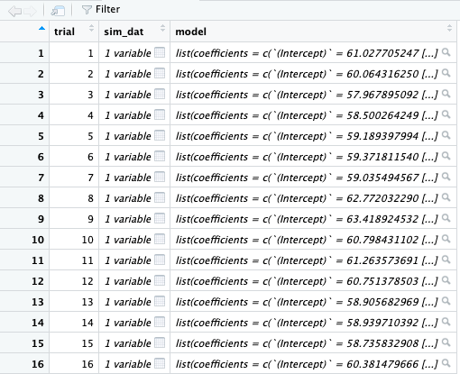
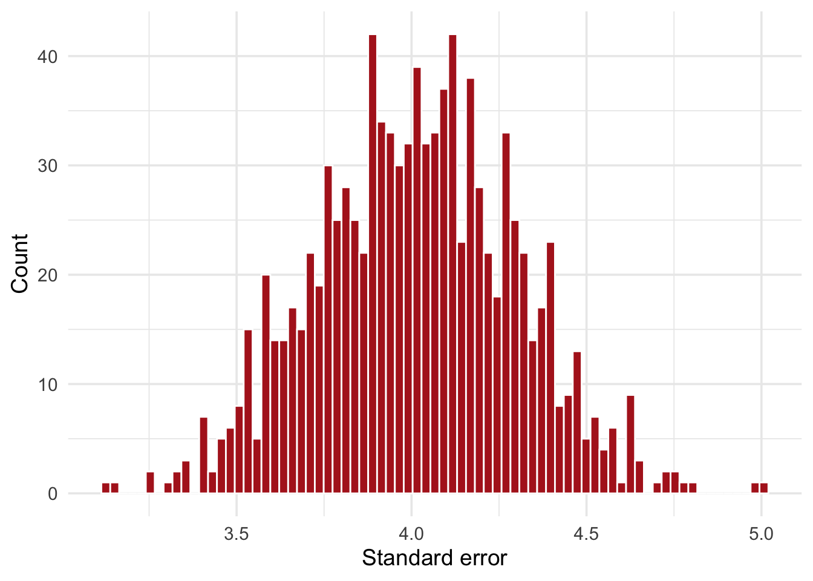
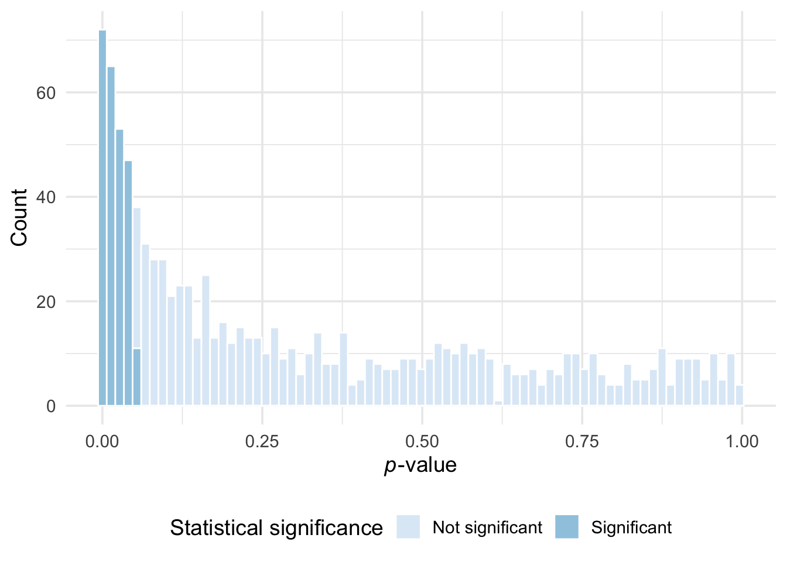
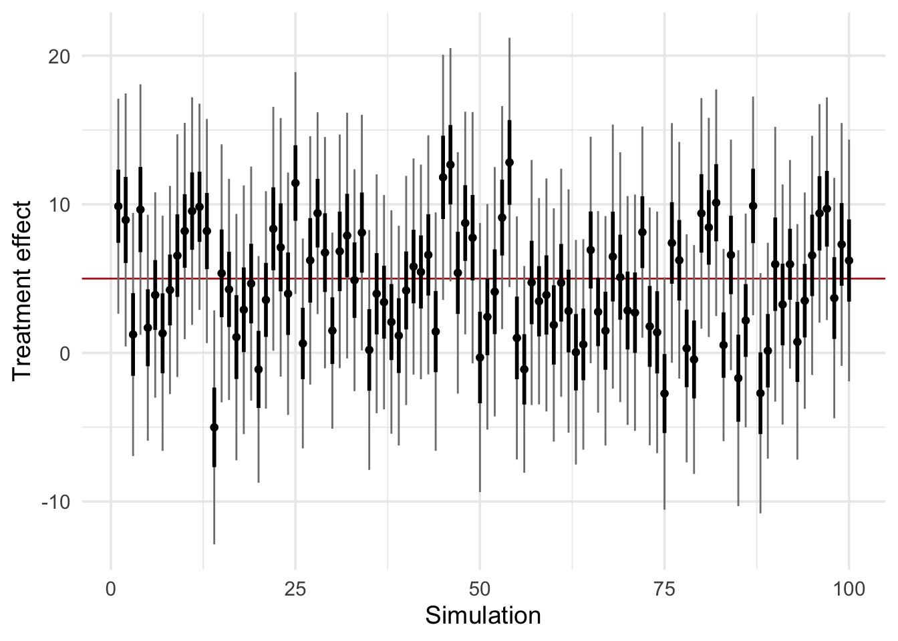

Packages used in this post
library(tidyverse)
library(broom)
library(modelsummary)
theme_set(theme_minimal(base_size = 14))Paw Hansen
August 26, 2023
If you’ve ever done a research project, at some point, someone has likely asked you the following question: is our n large enough? What this person is asking concerns _design analysis_: understanding the properties of your research design, usually before you start collecting any data.
Not doing design analysis will cause you problems. For example, you might run an intervention study with no chance of detecting the treatment effect.
In this post, I’ll show you a general way to approach design analysis using simulation. As it turns out, using simulation is a much more rigorous way to think about your research design than simply throwing your proposed n into an online ‘power calculator’. With simulation, you can study all relevant properties of the design; including n, minimum detectable treatment effect size, standard error of the treatment effect, statistical power of the study, and anything else you might think would be nice to know before running your study.
The workflow goes something like this:
State your assumptions about the future data (sample size, treatment effect, etc.),
simulate one dataset based on those assumptions,
turn your simulation into a function and then repeat it a bunch of times to simulate many dataset,
study the properties of those datasets using summary statistics and/or graphs.
Vòila.
Let us work our way thorugh a running example. Suppose we were interested in running a randomized experiment with the aim of improving student test scores.
Based on previous studies, we think the treatment effect is about five. Previous studies have used samples of about 100 students, so we think this could be a good place for us to start. Also, students usually have had test scores with a mean of 60 plus or minus about 20 points.
Let us simulate a dataset based on those assumptions:
set.seed(2608)
n_subjects <- 100
treat_effect <- 5
y_if_control <- rnorm(n_subjects, 60, 20)
y_if_treatment <- y_if_control + treat_effect
dat <- tibble(
condition = sample(x = rep(c("Control", "Treated"), n_subjects/2),
size = n_subjects,
replace = TRUE),
outcome = ifelse(condition == "Control", y_if_control, y_if_treatment)
)Let’s fit an intial model to our simulated data:
| Model 1 | |
|---|---|
| (Intercept) | 62*** |
| (3) | |
| conditionTreated | 1.4 |
| (4.1) | |
| Num.Obs. | 100 |
| R2 | 0.001 |
| R2 Adj. | −0.009 |
| RMSE | 20.26 |
| + p < 0.1, * p < 0.05, ** p < 0.01, *** p < 0.001 |
Looking at the results, 100 subjects for the experiment should make us worry. Although the estimated treatment effect is clearly statistically significant, it is far larger than the true treatment effect, which we set to 5. In addition, looking at the standard error of about 4.1, is seems impossible to estimate a treatment effect of five.
What would happen if we were to run the simulation again, this time setting a different seed?
set.seed(3009)
y_if_control <- rnorm(n_subjects, 60, 20)
y_if_treatment <- y_if_control + treat_effect
dat_2 <-
tibble(
condition = sample(x = rep(c("Control", "Treated"), n_subjects/2),
size = n_subjects,
replace = TRUE),
outcome = ifelse(condition == "Control", y_if_control, y_if_treatment)
)
mod_2 <-
summary(lm(outcome ~ condition, data = dat_2))
modelsummary(models = list(
"Model 1" = mod_1,
"Model 2" = mod_2),
fmt = fmt_significant(2),
stars = TRUE,
title = "Estimated treatment effect from a randomized controlled trial with 100 subjects, take 2")| Model 1 | Model 2 | |
|---|---|---|
| (Intercept) | 62*** | 59.9*** |
| (3) | (3.4) | |
| conditionTreated | 1.4 | −1.1 |
| (4.1) | (4.7) | |
| Num.Obs. | 100 | 100 |
| R2 | 0.001 | 0.001 |
| R2 Adj. | −0.009 | −0.010 |
| RMSE | 20.26 | 23.50 |
| + p < 0.1, * p < 0.05, ** p < 0.01, *** p < 0.001 |
Notice how we get a wildly different estimate of the treatment effect, reflecting that our 100 subject randomized trial is not very trustworthy.
Still, we should study this variation more systematically, and simulation can help us do that. Let’s turn our current approach into a function, so that we can repeat it many times.
To set up the simulation for replication, we first turn our once-off simulation into a function:
sim_my_data <- function(n_subjects = 100, treat_effect = 5) {
y_if_control <- rnorm(n_subjects, 60, 20)
y_if_treatment <- y_if_control + treat_effect
tibble(
condition = sample(x = rep(c("Control", "Treated"), n_subjects/2),
size = n_subjects,
replace = TRUE),
outcome = ifelse(condition == "Control", y_if_control, y_if_treatment)
)
}Let’s make sure that our function. does what we intend it to do:
# A tibble: 6 × 2
condition outcome
<chr> <dbl>
1 Control 107.
2 Treated 52.2
3 Treated 84.5
4 Control 85.5
5 Control 38.8
6 Treated 64.5Looks right. Now we can use map() to repeat our simulation 1,000 times:
And instead of fitting the model to just one simulated dataset, we can fit 1,000 models - one for each dataset. This will help us study the variation in the quantities we are interested in:
Now we have a list of simulated datasets with a model fit to each.

As a final step, let’s make two new list colums: one using tidy() which will store our model estimates, and one using glance which will store information about each model, such as R^2 etc.
Finally, we can unnest our tidied and glanced list columns so they are easier to work with:
With our datasets and models in place, we can start interrogating the design. For example, what can we say about the standard error from running such a design? Our two initial models suggested that the standard error was about 4, but we can study its variation more systematically:

As Figure 2 reveals, our standard error would range between about 3.5 and 4.5. If that is enough for our purpose, then fine. But being that we expect a treatment effect of about 5, we should not set our hopes up for achieving any “statistical significance”.
To get statistical significance, the standard error needs to be less than two times the treatment effect, i.e. <2.5. Say we were going for a standard error of 2. In that case, since the standard error drops with the square root of the sample size, we would need about 400 subjects.
new_sims <-
tibble(
trial = 1:1000,
sim_dat = map(trial, ~sim_my_data(n_subjects = 400))
) |>
mutate(model = map(sim_dat, ~lm(outcome ~ condition, data =.))) |>
mutate(tidied = map(model, tidy)) |>
unnest(.cols = tidied)
new_sims |>
filter(term == "conditionTreated") |>
select("std.error") |>
ggplot(aes(std.error)) +
geom_histogram(fill = "firebrick", color = "white", bins = 75) +
labs(x = "Standard error",
y = "Count")Another quantity we might be interest in is the p-value across simulations. Recall, that we defined a treatment effect of 5, so we know there is an effect of five. How likely is it that we would arrive at this result if we define a threshold of p < 0.05?
# A tibble: 1 × 1
stat_power
<dbl>
1 0.248In statistical parlance, this quantity is known as the statistical power: the likelihood of a hypothesis test detecting a true effect if there is one. With 100 subjects, we get a power of about 25 percent - much too low if our goal is to learn anything. Put another way, we incorrectly reject the true treatment effect about 75 percent of the time.
In case we wanted to, we could also make a plot:
many_sims_unnested |>
filter(term == "conditionTreated") |>
select("p.value") |>
mutate(signif = ifelse(p.value <= 0.05, "Significant", "Not significant")) |>
ggplot(aes(p.value)) +
geom_histogram(aes(fill = signif),
color = "white",
bins = 75) +
scale_fill_brewer() +
labs(x = expression(paste(italic(p), "-value")),
y = "Count",
fill = "Statistical significance") +
theme(legend.position = "bottom")
Looking at the p-values and standard errors of the treatment effect gives us some information about how well we can trust the estimated treatment effect (not much, it turns out). We could also study some properties of the overall model. For example, what is the coverage of say, the 68 and 95 percent confidence intervals?
many_sims_unnested <-
many_sims_unnested |>
mutate(
low_95 = estimate - (1.96 * std.error),
high_95 = estimate + (1.96 * std.error),
low_50 = estimate - (2/3 * std.error),
high_50 = estimate + (2/3 * std.error),
)
many_sims_unnested |>
filter(term == "conditionTreated") |>
summarize(
coverage_50 = mean(low_50 <= treat_effect & high_50 >= treat_effect),
coverage_95 = mean(low_95 <= treat_effect & high_95 >= treat_effect)
)# A tibble: 1 × 2
coverage_50 coverage_95
<dbl> <dbl>
1 0.468 0.965The coverage looks right, which suggest that at least running a linear regression is a good model for our purpose. In our case of a randomized experiment, this is not all that surprising since the model only needs to fit a very basic two-group comparison data structure. Again we could make a plot:
many_sims_unnested |>
filter(term == "conditionTreated") |>
slice(1:100) |>
ggplot(aes(trial)) +
geom_hline(yintercept = treat_effect, color = "firebrick") +
geom_point(aes(y = estimate)) +
geom_linerange(aes(ymin = low_95,
ymax = high_95),
color = "grey50") +
geom_linerange(aes(ymin = low_50,
ymax = high_50),
linewidth = 1) +
geom_point(aes(y = estimate)) +
labs(
x = "Simulation",
y = "Treatment effect"
)
Finally, let’s also have a look at how R^2 behaves across simulations:
Min. 1st Qu. Median Mean 3rd Qu. Max.
0.00 0.00 0.02 0.03 0.04 0.19 Overall, pretty low (as we should expect). But notice the outliers. Let’s make a final plot to summarize our simulations: